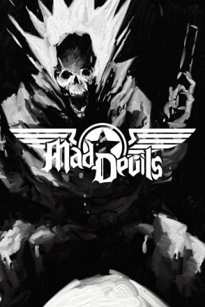

Mad Devil
OS HERÓIS NUNCA MORREM, APENAS SE REUNEM NO INFERNO! Nos últimos dias da Segunda Guerra Mundial, uma máquina de guerra nazista desesperada abraça o ocultismo. O maníaco Major Strauss planeja abrir os portões do próprio Inferno. Os Mad Devils são mobilizados para acabar com esse plano desequilibrado, mas às vezes, o heroísmo não é suficiente. Derrotados e condenados, os Mad Devils se reagrupam no submundo para uma missão final. SEIS PERSONAGENS DEMÔNICOS, SEIS CONJUNTOS DE PODERES, SEIS CAMINHOS PARA A VITÓRIA Lançado no abismo, o sargento fantasma Jack Asher explora o inferno para reunir seu esquadrão caído. Cada membro da equipe foi deformado aqui, distorcido e dotado de poderes demoníacos. Sua equipe especializada agora está armada com magias elementais. Domine todos eles e termine sua luta. COMBATER FOGO COM O FOGO DO INFERNO Será preciso mais do que armas para esmagar as ambições demoníacas dos nazistas. Você precisará das armas mais ctônicas que puder e magia suficiente para iluminar o vazio. Colete cristais demoníacos para fortalecer armas, desenvolver seus poderes e ganhar experiência através da violência. INFERNO PRÓPRIO: MAIS QUE FOGO E ENXOFRE O submundo é um lugar estranho e variado. Grandes partes são um deserto em chamas perpétuas, outras são reflexos distorcidos do mundo mortal, denso com supercrescimento sufocante, congelado por ventos sombrios ou fortificado por malditas legiões nazistas. NAZISTAS: VALE MATAR DUAS VEZES SÓ PARA TER CERTEZA O inferno já era ruim o suficiente antes da Segunda Guerra Mundial. Agora é uma zona de guerra, povoada por mortos-vivos, demônios vorazes e uma legião de nazistas. Eles não entenderam a mensagem quando morreram pela primeira vez - hora de repetir a lição, alto e bom som. O QUE TEM NESSE JOGO
⬇ Download